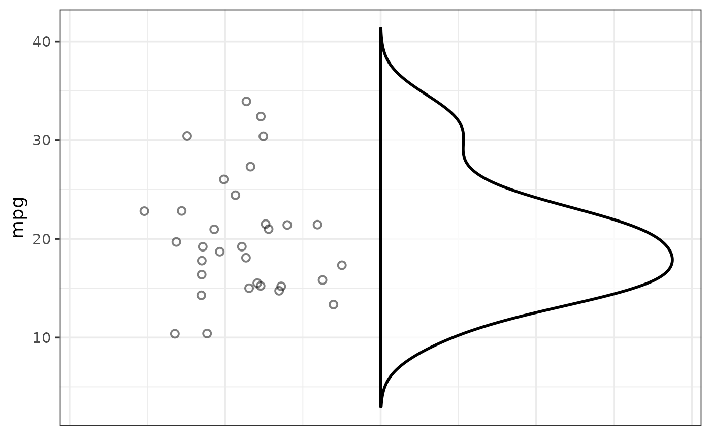
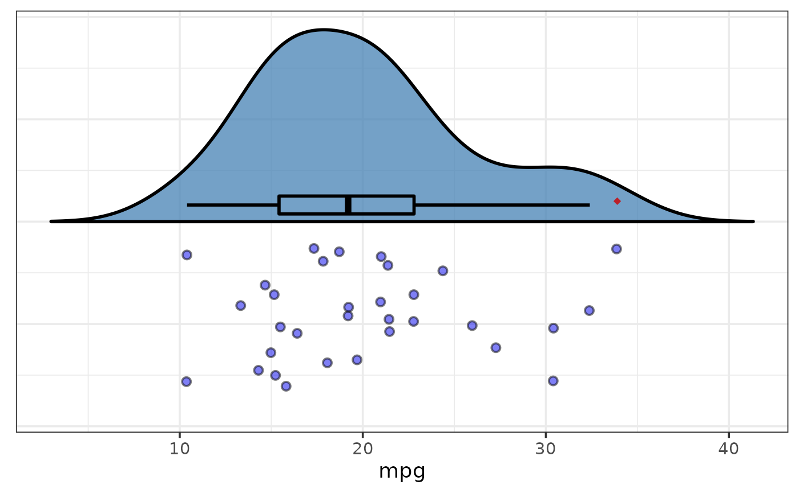
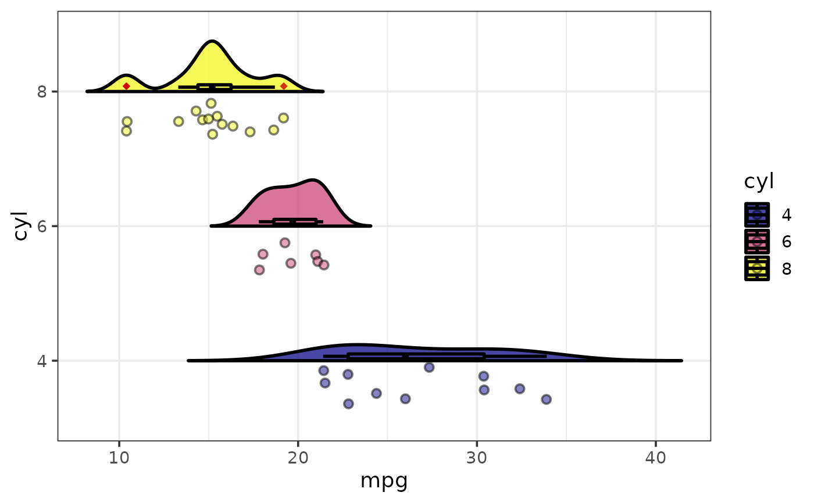

Easily generate hybrid half-violin/half-scatter plots AKA "rain cloud plots", with or without overlaid box plots, using ggplot2 and gghalves. Like other plot_* functions, plot_raincloud() provides a simplified argument-based customization interface for common modifications and yields plots that can be further modified with ggplot2 syntax. See this blog post for an introduction to ggplot2.
plot_raincloud(
data,
y,
x = NULL,
fill_var = NULL,
violin_colour = "black",
violin_fill = NULL,
violin_side = c("r", "l"),
violin_line_size = 1,
violin_alpha = 0.75,
violin_trim = FALSE,
violin_quantiles = NULL,
point_colour = "black",
point_fill = NULL,
point_side = c("l", "r"),
point_shape = c("circle", "square", "diamond", "triangle up", "triangle down"),
point_size = 2,
point_alpha = 0.5,
point_line_size = 1,
point_position = "dodge2",
box_plot = FALSE,
box_half = FALSE,
box_colour = "black",
box_fill = NULL,
box_side = c("r", "l"),
box_alpha = 0,
box_line_size = 1,
box_line_type = c("solid", "dashed", "dotted", "dotdash", "longdash", "twodash"),
box_whisker_coef = 1.5,
box_width = 0.1,
box_error_bars = FALSE,
box_nudge = 0.015,
box_outlier_colour = "red3",
box_outlier_fill = NULL,
box_outlier_size = 2,
box_outlier_shape = 18,
box_outlier_alpha = 0.8,
xlab = NULL,
ylab = NULL,
title = NULL,
title_hjust = 0.5,
caption = NULL,
caption_hjust = 0,
fill_var_title = NULL,
ylim = c(NA, NA),
ybreaks = ggplot2::waiver(),
transform_y = FALSE,
y_transformation = "log10",
y_var_labs = ggplot2::waiver(),
x_var_order = NULL,
x_var_labs = NULL,
fill_var_order = NULL,
fill_var_labs = NULL,
fill_var_values = NULL,
palette = c("plasma", "C", "magma", "A", "inferno", "B", "viridis", "D", "cividis",
"E"),
palette_direction = c("d2l", "l2d"),
palette_begin = 0,
palette_end = 1,
coord_flip = FALSE,
greyscale = FALSE,
theme = c("bw", "classic", "grey", "light", "dark", "minimal"),
text_size = 14,
font = c("sans", "serif", "mono"),
facet_var = NULL,
facet_var_order = NULL,
facet_var_labs = NULL,
facet_var_strip_position = c("top", "bottom"),
facet_var_text_bold = TRUE,
legend_position = c("right", "left", "top", "bottom"),
omit_legend = FALSE,
aesthetic_options = FALSE
)A data frame or tibble containing the dependent measure "y" and any grouping variables.
A numeric variable you want to obtain rain cloud plots for (quoted or unquoted), e.g. y = "variable" or y = variable.
A categorical variable you want to obtain separate rain cloud plots of y for (optional; quoted or unquoted), e.g. x = "variable" or x = variable.
Use if you want to assign a variable to the fill colour of
the half-violin and scattered points on the plot, e.g. fill_var =
"grouping_var" or fill_var = grouping_variable. Produces separate rain
cloud plots for each level of the fill variable. See
aes for details. N.B. If you intend to add box plots
(via box_plot = TRUE), the same variable should be assigned to both the
x-axis and fill_var, otherwise the box plots will not show up in the
correct locations.
Outline colour to use for the half-violin plot segment
of the rain cloud plot. Default is "black". You can use
colour_options to see many of the available options.
Fill colour to use for the half-violin plot segment of the
rain cloud plot. You can use colour_options to see many of
the available options. To assign different colours to groups of a variable
mapped to x or fill_var, use fill_var, palette, and/or fill_var_values
instead.
Set to "r" (default) if you want the half-violin plot segment to be draw on the right side of the rain cloud plot midline (or "l" for left).
Adjusts the thickness of the half-violin plot outline.
This adjusts the transparency/opacity of the half-violin plot component of the rain cloud plot, with valid values ranging from 0 = 100% transparent to 1 = 100% opaque.
Set this to TRUE if you want to trim the tails of the half-violin plot component of the rain cloud plot.
Accepts a vector of quantile values to draw as lines on the half-violin plot. For example, to draw a line at the median of y, you would set this to 0.5.
Outline colour to use for the scatter plot segment
of the rain cloud plot. Default is "black". You can use
colour_options to see many of the available options.
Fill colour to use for the scatter plot segment of the
rain cloud plot. You can use colour_options to see many of
the available options. To assign different colours to groups of a variable
mapped to x or fill_var, use fill_var, palette, and/or fill_var_values
instead.
Set to "l" (default) if you want the box plot to be draw on the left side of the rain cloud plot midline (or "r" for right).
Shape to use for the scatter plot points. Options include
geom_point shapes that have both colour and fill
aesthetics: "circle", "square", "diamond", "triangle up", and "triangle
down".
Adjusts the size of the points in the scatter plot portion of the rain cloud plot.
This adjusts the transparency/opacity of the scattered points, with valid values ranging from 0 = 100% transparent to 1 = 100% opaque.
Adjusts the scatter plot point outline thickness.
This typically does not need to be modified in a rain cloud plot. See the "position adjustment" section of the ggplot2 reference page for options and detailed information.
Set this to TRUE to add a box plot of y to the rain cloud plot.
Set to TRUE if you only want half of a box plot added (ignored if box_plot = FALSE).
Outline colour to use for the box plots (ignored if
box_plot = FALSE). Default is "black". You can use
colour_options to see many of the available options. To
assign different colours to groups of a variable mapped to x or fill_var,
use fill_var, palette, and/or fill_var_values instead.
Fill colour to use for the box plots (ignored if box_plot =
FALSE). You can use colour_options to see many of the
available options. To assign different colours to groups of a variable
mapped to x or fill_var, use fill_var, palette, and/or fill_var_values
instead.
Set to "r" (default) if you want the box plot to be draw on the right side of the rain cloud plot midline (or "l" for left). Ignored if box_plot = FALSE.
This adjusts the transparency/opacity of the scattered points, with valid values ranging from 0 = 100% transparent to 1 = 100% opaque (ignored if box_plot = FALSE).
Adjusts the thickness of box plot lines (ignored if box_plot = FALSE).
Used to specify the type of line to use for box plots (ignored if box_plot = FALSE). Options include: "solid", "dashed", "dotted", "dotdash", "longdash", and "twodash".
The length of box plot whiskers as a multiple of the interquartile range (marked by the box length). Default is the standard 1.5. Ignored if box_plot = FALSE.
Controls the box width (ignored if box_plot = FALSE).
Set to TRUE if you want to add error bar lines to the ends of the box plot whiskers (ignored if box_plot = FALSE).
Controls the distance between the box plot and mid line of the overall rain cloud plot, where 0 is touching the mid-line and higher values displace the box plot further in the direction specified with the box_side argument. Ignored if box_plot = FALSE.
Controls the colour of the boxplot outlier indicator points. If box_outlier_shape is set to a value between 21 and 25 then it controls the outline colour instead of the overall colour. Ignored if box_plot = FALSE.
If box_outlier_shape is set to a value between 21 and 25, this controls the fill colour of the box plot outlier indicator points. Ignored if box_plot = FALSE or box_outlier_shape is a value outside of 21-25 since these other shapes do not have a fill aesthetic.
Controls the size of the box plot outlier indicator points. Ignored if box_plot = FALSE.
Controls the shape of the box plot outlier indicator points. Ignored if box_plot = FALSE. To see examples of the available options in a web browser, set the aesthetic_options argument to TRUE.
This adjusts the transparency/opacity of the box plot outlier indicator points, with valid values ranging from 0 = 100% transparent to 1 = 100% opaque. Ignored if box_plot = FALSE.
Specify/overwrite the x-axis label using a character string, e.g. "x-axis label"
Specify/overwrite the y-axis label using a character string, e.g. "y-axis label"
Add a main title to the plot using a character string, e.g. "Violin graph of X"
Left-to-right/horizontal justification (alignment) of the main plot title. Accepts values from 0 (far left) to 1 (far right). Default is 0.5 (centre).
Add a figure caption to the bottom of the plot using a character string.
Left-to-right/horizontal justification (alignment) of the caption. Accepts values from 0 (far left) to 1 (far right). Default is 0 (left).
If a variable has been assigned to fill using fill_var, this allows you to modify the variable label in the plot legend.
specify the y-axis limits, e.g. ylim = c(lower_limit, upper_limit). Use NA for the existing minimum or maximum value of y, e.g. the default is ylim = c(NA, NA)
This allows you to change the break points to use for tick
marks on the y-axis. seq is particularly useful here. See
scale_y_continuous for details. If ybreaks is
specified, then ylim should be also.
Would you like to transform the y axis? (TRUE or FALSE)
If transform_y = TRUE, this determines the
transformation to be applied. Common choices include "log10" (the default),
"log2", "sqrt", or "exp". See scale_continuous for
details.
Allows you to modify the labels displayed with the y-axis
tick marks. See scale_continuous for details.
If a variable has been assigned to x, this allows you to
modify the order of the variable groups, e.g. x = grouping_variable,
x_var_order = c("group_2", "group_1"). See
fct_relevel for details.
If a variable has been assigned to x, this allows you to
modify the labels of the variable groups, e.g. x = grouping_variable,
x_var_labs = c("group_1_new_label" = "group_1_old_label",
"group_2_new_label" = "group_2_old_label"). See
fct_recode for details.
If a variable has been assigned to fill using fill_var,
this allows you to modify the order of the variable groups, e.g. fill_var =
grouping_variable, fill_var_order = c("group_2", "group_1"). See
fct_relevel for details.
If a variable has been assigned to fill using fill_var,
this allows you to modify the labels of the variable groups, e.g. fill_var
= grouping_variable, fill_var_labs = c("group_1_new_label" =
"group_1_old_label", "group_2_new_label" = "group_2_old_label"). See
fct_recode for details.
If a variable has been assigned to fill using
fill_var, this allows you to modify the colours assigned to the fill of
each of the variable groups, e.g. fill_var = grouping_variable,
fill_var_values = c("blue", "red"). See
scale_fill_manual for details. For the colour
options available in base R, see colour_options.
If a variable is assigned to fill_var, this determines which viridis colour palette to use. Options include "plasma" or "C" (default), "magma" or "A", "inferno" or "B", "viridis" or "D", and "cividis" or "E". See this link for examples. You can override these colour palettes with fill_var_values.
Choose "d2l" for dark to light (default) or "l2d" for light to dark.
Value between 0 and 1 that determines where along the
full range of the chosen colour palette's spectrum to begin sampling
colours. See scale_fill_viridis_d for details.
Value between 0 and 1 that determines where along the full
range of the chosen colour palette's spectrum to end sampling colours. See
scale_fill_viridis_d for details.
Flips the x and y axes, which makes this type of plot look
like a rain cloud (half-violin plot "cloud" on top of scattered point "rain
drops"). See coord_flip for details.
Set to TRUE if you want the plot converted to greyscale. Note that this will override colours you may have specified with other arguments.
Adjusts the theme using 1 of 6 predefined "complete" theme
templates provided by ggplot2. Currently supported options are: "classic",
"bw" (the elucidate default), "grey" (the ggplot2 default), "light",
"dark", & "minimal". See theme_bw for more
information.
This controls the size of all plot text. Default = 14.
This controls the font of all plot text. Default = "sans" (Arial). Other options include "serif" (Times New Roman) and "mono" (Courier New).
Use if you want separate plots for each level of a grouping
variable (i.e. a faceted plot), e.g. facet_var = "grouping_variable" or
facet_var = grouping_variable. See facet_wrap for
details.
If a variable has been assigned for faceting using
facet_var, this allows you to modify the order of the variable groups, e.g.
facet_var = grouping_variable, facet_var_order = c("group_2", "group_1").
See fct_relevel for details.
If a variable has been assigned for faceting using
facet_var, this allows you to modify the labels of the variable groups
which will appear in the facet strips, e.g. facet_var = grouping_variable,
facet_var_labs = c("group_1_new_label" = "group_1_old_label",
"group_2_new_label" = "group_2_old_label"). See
fct_recode for details.
If a variable has been assigned for faceting using facet_var, this allows you to modify the position of the facet strip labels. Sensible options include "top" (the default) or "bottom".
If a variable has been assigned for faceting using facet_var, this allows you to use boldface (TRUE/default or FALSE) for the facet strip label text.
This allows you to modify the legend position. Options include "right" (the default), "left", "top", & "bottom".
Set to TRUE if you want to remove/omit the legends.
If set to TRUE, opens a web browser to the tidyverse online aesthetic options vignette.
A ggplot rain cloud plot.
Wickham, H. (2016). ggplot2: elegant graphics for data analysis. New York, N.Y.: Springer-Verlag.
Allen, M., Poggiali, D., Whitaker, K., Marshall, T. R., & Kievit, R. A. (2019). Raincloud plots: a multi-platform tool for robust data visualization. Wellcome open research, 4.
data(mtcars) #load the mtcars data
#basic raincloud plot
plot_raincloud(mtcars, y = mpg)

# \donttest{
#set coord_flip = TRUE to flip the x and y axes so it looks like a rain cloud
#add a box plot with box_plot = TRUE
#add fill colours with violin_fill and point_fill
plot_raincloud(mtcars, mpg,
coord_flip = TRUE, box_plot = TRUE,
violin_fill = "steelblue", point_fill = "blue2")

#split the plot by a grouping variable with the x argument
#assign a variable to fill colour with the fill_var argument
#it is recommended to assign the same variable to x and fill_colour or box
#plots will not show up correctly
plot_raincloud(mtcars, mpg, x = cyl, fill_var = cyl,
coord_flip = TRUE, box_plot = TRUE)

# }